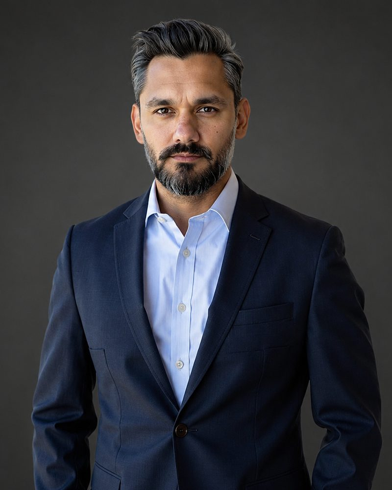
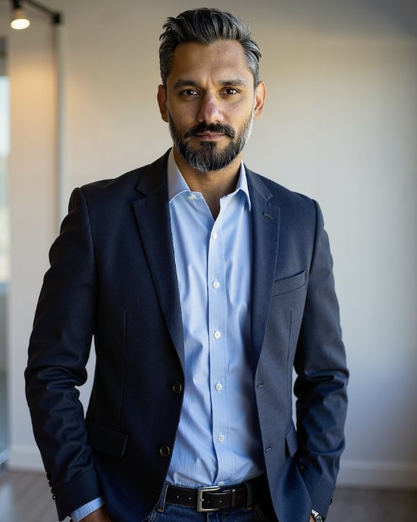

About
I don't study capital decisions. I take them to the Board.
For more than 20 years I've worked on the decisions that carry the most capital and the most risk: UK housing pipelines, Gulf giga-projects and, today, master-planned communities in Saudi Arabia.
Biography
Event organisers and search firms are welcome to use this text as written. High-resolution photographs are available on request.

Shehryar Gilani is a strategic finance leader whose work connects capital allocation, corporate governance and enterprise strategy. He holds three charters: CFA, FCMA and MRICS. He is also certified in governance, risk and compliance by OCEG (the Open Compliance and Ethics Group).
He leads Portfolio Management for a Public Investment Fund-backed master developer building a new community in Khafji, Saudi Arabia, reporting to the Chief Executive and presenting investment cases to the Management Committee and Board. Before that he worked in business planning and strategy at NEOM on Trojena, a SAR 180bn (about £35bn) programme.
He spent 18 years at L&Q, one of the UK's largest housing associations, rising to Director of Financial Planning and Performance. There he led a team of more than 40 across a £5bn+ development pipeline and 110,000 homes.
His work focuses on one question: whether an organisation can trust the numbers behind its largest decisions. He writes the Decision Integrity series on governance, capital and AI.
Career
Two markets, one discipline
Portfolio Management – Public Investment Fund-backed master developer
Leads Portfolio Management, reporting to the Chief Executive, after joining as Feasibility Director. Owns the investment case for a mixed-use master development programme. Rebuilt the corporate plan so it re-runs in two minutes, not two days.
Business Planning and Strategy – NEOM
Business planning for Trojena, a SAR 180bn (about £35bn) giga-project programme.
Director of Financial Planning and Performance – L&Q
Rose to lead financial planning, performance and business partnering at one of the UK's largest housing associations. Reported to the Group Finance Director, led a team of 40+, and supported the Board across a £5bn+ development pipeline and 110,000 homes, including shared ownership.
Credentials
Finance, real estate and governance, chartered in each
Chartered Financial Analyst, CFA Institute
Fellow, Chartered Institute of Management Accountants
Member, Royal Institution of Chartered Surveyors
Governance, Risk and Compliance Professional, OCEG
Why the combination matters: capital decisions in real estate fail where finance, valuation and governance meet. Each charter covers one of those disciplines.
Ideas I'm known for
Governance before viability → The Decision Integrity System → Strategic Portfolio Management → AI changes the maths →Published elsewhere
Winning over the C-suite and managing change resistance →Finance Alliance, October 2024. Based on his FP&A Summit London talk.Non-executive and committee roles in Audit and Risk, Investment or Development; keynotes; media.
Start a conversationConnect on LinkedIn →